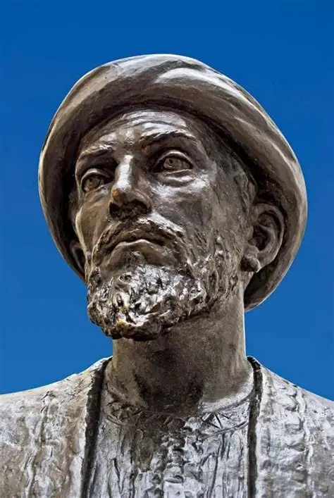

La psicología es una ciencia que se dedica a estudiar la mente y el comportamiento humano.
Busca
entender cómo pensamos, sentimos y actuamos, y por qué lo hacemos.
Las enfermedades consideradas maldicoines de los dioses. Propuso 4 tipos de temperamentos
Teoria de los tres tipos de psique
Idea del sentido común, definición de intelecto y las motivaciones.
Influyente filósofo y médico persa, consideraba el alma (Nafs) como una entidad inmortal separada del cuerpo. Sostenía que las emociones y la salud mental estaban profundamente conectadas con el bienestar físico, siendo uno de los primeros en tratar las enfermedades psicológicas como condiciones médicas.
Su contribución más significativa a la psicología es su interpretación de la obra de Aristóteles. Se opuso a la idea de la separación del alma y el cuerpo, afirmando que el intelecto individual es una extensión de un intelecto universal. Esta visión materialista y unitaria del ser humano influyó en los pensadores que se oponían al dualismo.
Enfatizó la importancia de la higiene mental para el bienestar físico. En sus escritos, abordó la salud mental desde una perspectiva médica y ética, aconsejando el equilibrio emocional y la moderación. Sus ideas sobre cómo el pensamiento y las emociones afectan al cuerpo son una antesala de la terapia cognitiva.
Su psicología se basa en la filosofía aristotélica, concibiendo al ser humano como un compuesto de cuerpo y alma. Desarrolló un modelo de las facultades del alma, distinguiendo entre los sentidos (externos e internos como la imaginación y la memoria), el intelecto y la voluntad
A través de su nominalismo y la "navaja de Ockham", sentó las bases para el empirismo y la psicología científica. Al argumentar que solo existen los individuos y que el conocimiento proviene de la experiencia directa, promovió un enfoque que privilegia la observación y la evidencia sobre las ideas abstractas, una base metodológica para el futuro conductismo.
El período medieval sentó las bases para el desarrollo posterior de la psicología como ciencia, preparando el terreno para el Renacimiento.
Pensaba que la introspección era un método válido para buscar la verdad y que mente y cuerpo eran
entidades separadas
También consideró el cuerpo como una máquina compleja, lo que influyó en el desarrollo de la
idea de la acción refleja.
En la Ilustración, la psicología se vio influenciada por la razón y el método científico. Se buscó
entender la mente como un objeto de estudio objetivo, similar a las ciencias naturales.
En este marco se llevaron algunas corrientes que influenciaron a la psicología asi como el
Romanticismo, Existencialismo y el Voluntarismo
La época del Romanticismo, como reacción, trajo un enfoque en la emoción, la intuición y la experiencia subjetiva. Esto puso de relieve la importancia del individuo y de los aspectos no racionales de la psique.
El Existencialismo se centró en la libertad, la elección y la búsqueda de sentido personal. Influyó en la psicología al destacar que las personas son responsables de crear su propia existencia, no estando predeterminadas por fuerzas externas.
Se centra en el estudio de la voluntad como el elemento principal y más activo de la conciencia. Wundt creía que la mente no es una colección pasiva de ideas, sino un proceso dinámico y creativo en el que la atención y la voluntad juegan un papel crucial en la organización y síntesis de la experiencia. Utilizaba la introspección experimental para analizar la conciencia en sus elementos básicos.
Encuentra las pabalras escondidas